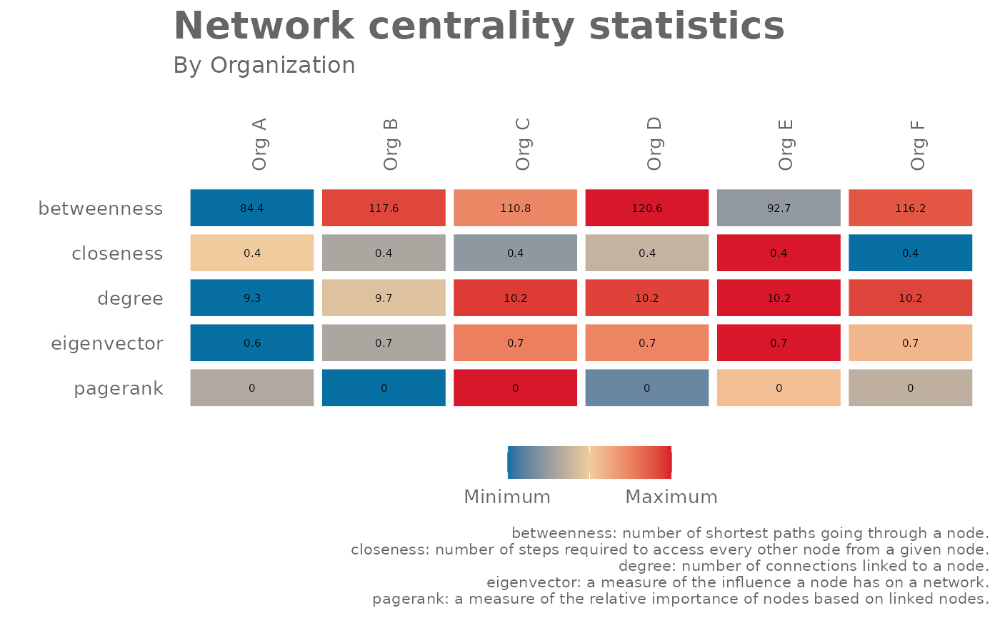

Summarise node centrality statistics with an igraph object
network_summary.RdPass an igraph object to the function and obtain centrality statistics for each node in the object as a data frame. This function works as a wrapper of the centralization functions in 'igraph'.
Arguments
- graph
'igraph' object that can be returned from
network_g2g()ornetwork_p2p()when thereturnargument is set to"network".- hrvar
String containing the name of the HR Variable by which to split metrics. Defaults to
NULL.- return
String specifying what output to return. Valid inputs include:
"table""network""plot"
See
Valuefor more information.
Value
By default, a data frame containing centrality statistics. Available statistics include:
betweenness: number of shortest paths going through a node.
closeness: number of steps required to access every other node from a given node.
degree: number of connections linked to a node.
eigenvector: a measure of the influence a node has on a network.
pagerank: calculates the PageRank for the specified vertices. Please refer to the igraph package documentation for the detailed technical definition.
When "network" is passed to "return", an 'igraph' object is returned with
additional node attributes containing centrality scores.
When "plot" is passed to "return", a summary table is returned showing
the average centrality scores by HR attribute. This is currently available if
there is a valid HR attribute.
See also
Other Network:
g2g_data,
network_g2g(),
network_p2p(),
p2p_data_sim(),
p2p_data
Examples
# Simulate a p2p network
p2p_data <- p2p_data_sim(size = 100)
g <- network_p2p(data = p2p_data, return = "network")
# Return summary table
network_summary(graph = g, return = "table")
#> # A tibble: 100 × 6
#> node_id betweenness closeness degree eigenvector pagerank
#> <chr> <dbl> <dbl> <dbl> <dbl> <dbl>
#> 1 SIM_ID_1 0 0.324 12 0.739 0.00191
#> 2 SIM_ID_3 8.03 0.285 10 0.634 0.00205
#> 3 SIM_ID_4 3.55 0.264 10 0.633 0.00243
#> 4 SIM_ID_5 29.4 0.267 10 0.625 0.00273
#> 5 SIM_ID_7 147. 0.305 11 0.725 0.00298
#> 6 SIM_ID_8 119. 0.297 11 0.737 0.00328
#> 7 SIM_ID_9 92.7 0.283 10 0.659 0.00474
#> 8 SIM_ID_10 66.0 0.281 9 0.602 0.00526
#> 9 SIM_ID_11 194. 0.344 11 0.773 0.00466
#> 10 SIM_ID_12 200. 0.310 11 0.763 0.00523
#> # ℹ 90 more rows
# Return network with node centrality statistics
network_summary(graph = g, return = "network")
#> IGRAPH e7774ac DNW- 100 500 --
#> + attr: weight (g/n), name (v/c), Organization (v/c), node_size (v/n),
#> | betweenness (v/n), closeness (v/n), degree (v/n), eigenvector (v/n),
#> | pagerank (v/n), weight (e/n)
#> + edges from e7774ac (vertex names):
#> [1] SIM_ID_1->SIM_ID_3 SIM_ID_1->SIM_ID_4 SIM_ID_1->SIM_ID_5
#> [4] SIM_ID_1->SIM_ID_8 SIM_ID_1->SIM_ID_25 SIM_ID_1->SIM_ID_96
#> [7] SIM_ID_1->SIM_ID_97 SIM_ID_1->SIM_ID_98 SIM_ID_1->SIM_ID_99
#> [10] SIM_ID_1->SIM_ID_2 SIM_ID_1->SIM_ID_6 SIM_ID_1->SIM_ID_100
#> [13] SIM_ID_3->SIM_ID_4 SIM_ID_3->SIM_ID_5 SIM_ID_3->SIM_ID_7
#> [16] SIM_ID_3->SIM_ID_8 SIM_ID_3->SIM_ID_44 SIM_ID_3->SIM_ID_98
#> + ... omitted several edges
# Return summary plot
network_summary(graph = g, return = "plot", hrvar = "Organization")

# Simulate a g2g network and return table
g2 <- g2g_data %>% network_g2g(return = "network")
#> `primary` field not provided. Assuming `PrimaryCollaborator_Organization` as the `primary` variable.
#> `secondary` field not provided. Assuming `SecondaryCollaborator_Organization` as the `secondary` variable.
network_summary(graph = g2, return = "table")
#> # A tibble: 6 × 6
#> node_id betweenness closeness degree eigenvector pagerank
#> <chr> <dbl> <dbl> <dbl> <dbl> <dbl>
#> 1 "G&A\nEast" 0 0.556 5 1 0.178
#> 2 "G&A\nNorth" 4 0.625 3 0.216 0.130
#> 3 "G&A\nSouth" 8 0.833 5 0.691 0.188
#> 4 "G&A\nWest" 0 0.556 5 1 0.178
#> 5 "North\nSales" 0 0.417 4 0.160 0.171
#> 6 "South\nSales" 0 0.5 4 0.514 0.155